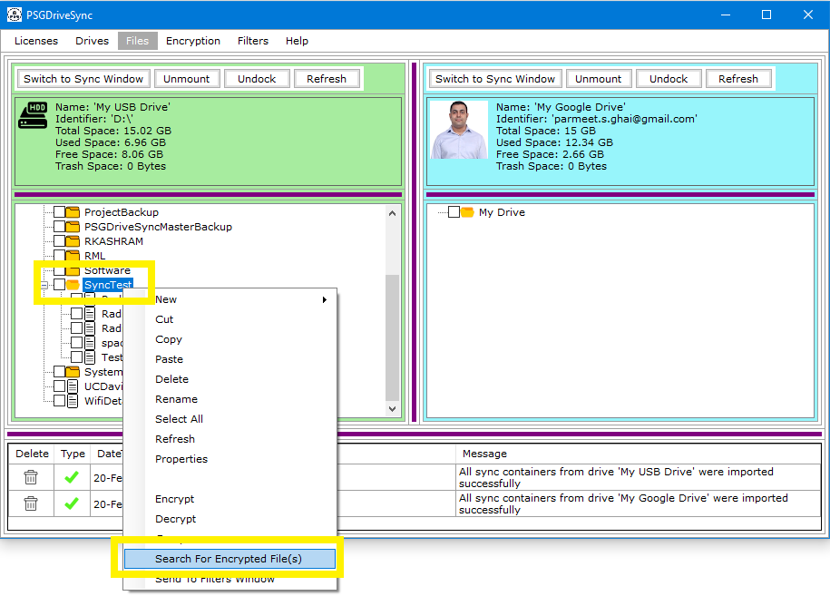
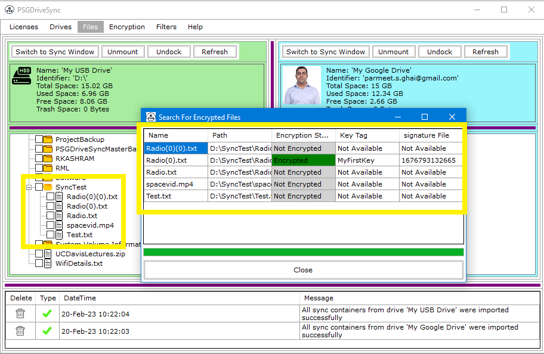

This functionality has been designed to help you figure out if a folder contains encrypted files or not and if it does then how many are there and what settings (encryption key tag and signature file) each file is using. Following are the steps needed to be performed in order to Search a folder for encrypted files.
|
1 |
Right click on any folder of your choosing and then click on "Search for Encrypted Files" in the right click menu. |
 |
|
2 |
A pop up window should open up displaying all the files, the folder has along with the encryption status and setting of each file. |
 |